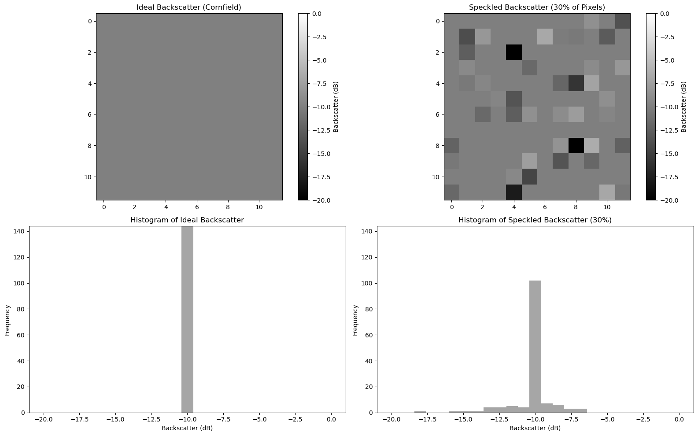

This notebook will provide an empirical demonstration of speckle - how it originates, how it visually and statistically looks like, and some of the most common approaches to filter it.
Speckle is defined as a kind of noise that affects all radar images. Given the multiple scattering contributions originating from the various elementary objects present within a resolution cell, the resulting backscatter signal can be described as a random constructive and destructive interference of wavelets. As a consequence, speckle is the reason why a granular pattern normally affects SAR images, making it more challenging to interpret and analyse them.
import numpy as npimport xarray as xrimport jsonfrom pathlib import Pathimport matplotlib.pyplot as pltimport holoviews as hvfrom holoviews.streams import RangeXYfrom scipy.ndimage import uniform_filterfrom functools import partialhv.extension("bokeh")
Let’s make an example of a cornfield (with a typical backscattering value of about -10 dB). According to the following equation:
We should ideally have a uniform discrete sigma naught\(\sigma^0\) value, given that the cornfield pixel is the only individual contributor.
However, since we already learned from the previous notebooks that a pixel’s ground size can be in the order of tens of meters (i.e., 10 meters for Sentinel-1), we can imagine that many sub-pixel objects (e.g., rocks, trees,…) contribute to the global backscattered information.
Let´s replicate this behavior with an ideal uniform area constituted by 100 pixels and then by adding 30% of speckle.
ideal_backscatter =-10# in dB, a typical value for cornfieldswidth =12size = (width, width)ideal_data = np.full(size, ideal_backscatter)ideal_data_linear =10** ( ideal_data /10) # Convert dB to linear scale for speckle additionspeckle_fraction =0.3num_speckled_pixels =int( size[0] * size[1] * speckle_fraction) # Rayleigh speckle noisespeckled_indices = np.random.choice( width * width, num_speckled_pixels, replace=False) # random indices for speckle# Initialize speckled data as the same as the ideal dataspeckled_data_linear = ideal_data_linear.copy()speckle_noise = np.random.rayleigh(scale=1.0, size=num_speckled_pixels)speckled_data_linear.ravel()[speckled_indices] *= ( speckle_noise # Add speckle to the selected pixels)ideal_data_dB =10* np.log10(ideal_data_linear)speckled_data_dB =10* np.log10(speckled_data_linear)plt.figure(figsize=(16, 10))# Ideal dataplt.subplot(2, 2, 1)plt.imshow(ideal_data_dB, cmap="gray", vmin=-20, vmax=0)plt.title("Ideal Backscatter (Cornfield)")plt.colorbar(label="Backscatter (dB)")# Speckled dataplt.subplot(2, 2, 2)plt.imshow(speckled_data_dB, cmap="gray", vmin=-20, vmax=0)plt.title(f"Speckled Backscatter ({int(speckle_fraction *100)}% of Pixels)")plt.colorbar(label="Backscatter (dB)")bins =25hist_ideal, bins_ideal = np.histogram(ideal_data_dB.ravel(), bins=bins,range=(-20, 0))hist_speckled, bins_speckled = np.histogram( speckled_data_dB.ravel(), bins=bins, range=(-20, 0))max_freq =max( hist_ideal.max(), hist_speckled.max()) # maximum frequency for normalization# Histogram for ideal dataplt.subplot(2, 2, 3)plt.hist(ideal_data_dB.ravel(), bins=bins, range=(-20, 0), color="gray", alpha=0.7)plt.ylim(0, max_freq)plt.title("Histogram of Ideal Backscatter")plt.xlabel("Backscatter (dB)")plt.ylabel("Frequency")# Histogram for speckled dataplt.subplot(2, 2, 4)plt.hist(speckled_data_dB.ravel(), bins=bins, range=(-20, 0), color="gray", alpha=0.7)plt.ylim(0, max_freq)plt.title(f"Histogram of Speckled Backscatter ({int(speckle_fraction *100)}%)")plt.xlabel("Backscatter (dB)")plt.ylabel("Frequency")plt.tight_layout()

Figure 1: Synthetic data that emulates speckles in microwave backscattering
We can imagine that the second plot represents one pixel of cornfield from a real SAR acquisition, while the first plot represents an ideal uniform pixel of cornfield (no speckle). The introduction of a simulated 30% speckle noise could be related to the presence of small objects of any sort present in the scene, which would cause a pixel-to-pixel variation in terms of intensity. Backscatter depends on:
Dielectric properties of an object,
Frequency of electromagnetic signal,
Angle of acquisition,
Cross-section of ground object, etc.
All these random contributions (such as the wind) would result in a different speckle pattern each time a SAR scene is acquired over the same area. Many subpixel contributors build up a complex scattered pattern in any SAR image, making it erroneous to rely on a single pixel intensity for making reliable image analysis. In order to enhance the degree of usability of a SAR image, several techniques have been put in place to mitigate speckle. We will now show two of the most common approaches: the temporal and the spatial filter.
7.1 Lake Neusiedl data
We load a dataset that contains the CORINE land cover and Sentinel-1 \(\sigma^0_E\) at a 20 meter resolution. This is the same data presented in notebook 6.
We also create the same dashboard for backscatter of different landcover types over time. In order to make this code reusable and adaptable we will define the following function plot_variability, which allows the injection of a spatial and/or temporal filter. It is not important to understand all the code of the following cell!
# Load encodingwithopen("../assets/06_color_mapping.json", "r") as f: color_mapping_data = json.load(f)# Get mappingcolor_mapping = {item["value"]: item for item in color_mapping_data["land_cover"]}# Get landcover codes present in the imagepresent_landcover_codes = np.unique( fused_ds.land_cover.values[~np.isnan(fused_ds.land_cover.values)]. astype(int))def load_image(var_ds, time, land_cover, x_range, y_range, filter_fun_spatial=None):""" Callback Function Landcover. Parameters ---------- time: panda.datetime time slice landcover: int land cover type x_range: array_like longitude range y_range: array_like latitude range Returns ------- holoviews.Image """if time isnotNone: var_ds = var_ds.sel(time=time)if land_cover =="\xa0\xa0\xa0 Complete Land Cover": sig0_selected_ds = var_ds.sig0else: land_cover_value =int(land_cover.split()[0]) mask_ds = var_ds.land_cover == land_cover_value sig0_selected_ds = var_ds.sig0.where(mask_ds)if filter_fun_spatial isnotNone: sig0_np = filter_fun_spatial(sig0_selected_ds.values)else: sig0_np = sig0_selected_ds.values# Convert unfiltered data into Holoviews Image img = hv.Dataset( (sig0_selected_ds["x"], sig0_selected_ds["y"], sig0_np), ["x", "y"],"sig0" )if x_range and y_range: img = img.select(x=x_range, y=y_range)return hv.Image(img)def plot_variability(var_ds, filter_fun_spatial=None, filter_fun_temporal=None): robust_min = var_ds.sig0.quantile(0.02).item() robust_max = var_ds.sig0.quantile(0.98).item() bin_edges = [ i + j *0.5for i inrange(int(robust_min) -2, int(robust_max) +2)for j inrange(2) ] land_cover = {"\xa0\xa0\xa0 Complete Land Cover": 1} land_cover.update( {f"{int(value): 02}{color_mapping[value]['label']}": int(value)for value in present_landcover_codes } ) time = var_ds.sig0["time"].values rangexy = RangeXY()if filter_fun_temporal isnotNone: var_ds = filter_fun_temporal(var_ds) load_image_ = partial( load_image, var_ds=var_ds, filter_fun_spatial=filter_fun_spatial, time=None ) dmap = ( hv.DynamicMap(load_image_, kdims=["Landcover"], streams=[rangexy]) .redim.values(Landcover=land_cover) .hist(normed=True, bins=bin_edges) )else: load_image_ = partial( load_image, var_ds=var_ds, filter_fun_spatial=filter_fun_spatial ) dmap = ( hv.DynamicMap(load_image_, kdims=["Time", "Landcover"], streams=[rangexy]) .redim.values(Time=time, Landcover=land_cover) .hist(normed=True, bins=bin_edges) ) image_opts = hv.opts.Image( cmap="Greys_r", colorbar=True, tools=["hover"], clim=(robust_min, robust_max), aspect="equal", framewise=False, frame_height=500, frame_width=500, ) hist_opts = hv.opts.Histogram(width=350, height=555)return dmap.opts(image_opts, hist_opts)
Now, lets work on the real-life dataset to see how speckle actually looks like.
plot_variability(fused_ds)
Figure 2: Lake Neusiedl \(\sigma^0_E\) without any filter.
The speckle noise tipycally appears as a “salt-and-pepper” pattern. Also, please note the distribution of backscatter for each land cover. Even though speckle is known for following non-normal distributions (i.e., Rayleigh distribution for amplitude in the linear domain, and the Gumple for intensity in the log domain), we can assume that due to the Central Limit Theorem, the overall backscatter means (dB) tend to follow a Gaussian distribution.
We can mitigate speckle (it is impossible to remove it completely) by following approaches such as: - spatial filtering - taking mean backscatter value over the same land cover, or - temporal filtering - focusing on a small area or even one pixel, but averaging it over some time period.
Either way, one pixel is never representative of ground truth! Therefore we need to look at samples and distributions.
7.2 Spatial filtering
We first introduce a common spatial filter. The Lee filter is an adaptive speckle filter. It follows three assumptions:
SAR speckle is modeled as a multiplicative noise - the brighter the area the noisier the data.
The noise and the signal are statistically independent of each other.
The sample mean and sample variance of a pixel is equal to its local mean and local variance.
Let’s build up a function for applying a Lee filter with a kernel size of 7 (do not forget to switch back to linear units before doing this computation and to dB after it):
def lee_filter(raster, size=7):""" Parameters: raster: ndarray 2D array representing the noisy image (e.g., radar image with speckle) size: int Window size for the filter (must be odd, default is 7) Returns: filtered_image (ndarray): The filtered image with reduced speckle noise """ raster = np.nan_to_num(raster) raster =10** (raster /10)# Mean and variance over local window mean_window = uniform_filter(raster, size=size) mean_sq_window = uniform_filter(raster**2, size=size) variance_window = mean_sq_window - mean_window**2# Noise variance estimation (this could also be set manually) overall_variance = np.var(raster)# Compute the Lee filter weights = variance_window / (variance_window + overall_variance)return10* np.log10(mean_window + weights * (raster - mean_window))
Figure 3: Lake Neusiedl \(\sigma^0_E\) with a Lee filter applied.
7.3 Temporal filtering
Temporal filtering would involve taking the median of all previous (past) observations for each pixel. This approach comes with severe limitations since it takes out the content-rich information tied to the temporal variability of backscatter.
def temporal_filter(raster):""" Parameters: raster: ndarray 3D array representing the noisy image over time (e.g., radar image with speckle) Returns: filtered_image (ndarray): The filtered image with reduced speckle noise """return raster.median("time")
Figure 4: Lake Neusiedl \(\sigma^0_E\) with a temporal filter applied.
Let´s observe the histograms of the two plots. Especially in the region around the lake, it is clear that the distribution is now less dispersed and more centered around a central value.
![](data:image/png;base64,iVBORw0KGgoAAAANSUhEUgAAAEAAAABACAYAAACqaXHeAAAABHNCSVQICAgIfAhkiAAAAAlwSFlz
AAAB+wAAAfsBxc2miwAAABl0RVh0U29mdHdhcmUAd3d3Lmlua3NjYXBlLm9yZ5vuPBoAAA6zSURB
VHic7ZtpeFRVmsf/5966taWqUlUJ2UioBBJiIBAwCZtog9IOgjqACsogKtqirT2ttt069nQ/zDzt
tI4+CrJIREFaFgWhBXpUNhHZQoKBkIUASchWla1S+3ar7r1nPkDaCAnZKoQP/D7mnPOe9/xy76n3
nFSAW9ziFoPFNED2LLK5wcyBDObkb8ZkxuaoSYlI6ZcOKq1eWFdedqNzGHQBk9RMEwFAASkk0Xw3
ETacDNi2vtvc7L0ROdw0AjoSotQVkKSvHQz/wRO1lScGModBFbDMaNRN1A4tUBCS3lk7BWhQkgpD
lG4852/+7DWr1R3uHAZVQDsbh6ZPN7CyxUrCzJMRouusj0ipRwD2uKm0Zn5d2dFwzX1TCGhnmdGo
G62Nna+isiUqhkzuKrkQaJlPEv5mFl2fvGg2t/VnzkEV8F5ioioOEWkLG86fvbpthynjdhXYZziQ
x1hC9J2NFyi8vCTt91Fh04KGip0AaG9zuCk2wQCVyoNU3Hjezee9bq92duzzTmxsRJoy+jEZZZYo
GTKJ6SJngdJqAfRzpze0+jHreUtPc7gpBLQnIYK6BYp/uGhw9YK688eu7v95ysgshcg9qSLMo3JC
4jqLKQFBgdKDPoQ+Pltb8dUyQLpeDjeVgI6EgLIQFT5tEl3rn2losHVsexbZ3EyT9wE1uGdkIPcy
BGxn8QUq1QrA5nqW5i2tLqvrrM9NK6AdkVIvL9E9bZL/oyfMVd/jqvc8LylzRBKDJSzIExwhQzuL
QYGQj4rHfFTc8mUdu3E7yoLtbTe9gI4EqVgVkug2i5+uXGo919ixbRog+3fTbQ8qJe4ZOYNfMoTI
OoshUNosgO60AisX15aeI2PSIp5KiFLI9ubb1vV3Qb2ltwLakUCDAkWX7/nHKRmmGIl9VgYsUhJm
2NXjKYADtM1ygne9QQDIXlk49FBstMKx66D1v4+XuQr7vqTe0VcBHQlRWiOCbmmSYe2SqtL6q5rJ
zsTb7lKx3FKOYC4DoqyS/B5bvLPxvD9Qtf6saxYLQGJErmDOdOMr/zo96km1nElr8bmPOBwI9COv
HnFPRIwmkSOv9kcAS4heRsidOkpeWBgZM+UBrTFAXNYL5Vf2ii9c1trNzpYdaoVil3WIc+wdk+gQ
noie3ecCcxt9ITcLAPWt/laGEO/9U6PmzZkenTtsSMQ8uYywJVW+grCstAvCIaAdArAsIWkRDDs/
KzLm2YcjY1Lv0UdW73HabE9n6V66cxSzfEmuJssTpKGVp+0vHq73FwL46eOjpMpbRAnNmJFrGJNu
Ukf9Yrz+3rghiumCKNXXWPhLYcjxGsIpoCMsIRoFITkW8AuyM8jC1+/QLx4bozCEJIq38+1rtpR6
V/yzb8eBlRb3fo5l783N0CWolAzJHaVNzkrTzlEp2bQ2q3TC5gn6wpnoQAmwSiGh2GitnTmVMc5O
UyfKWUKCIsU7+fZDKwqdT6DDpvkzAX4/+AMFjk0tDp5GRXLpQ2MUmhgDp5gxQT8+Y7hyPsMi8uxF
71H0oebujHALECjFKaW9Lm68n18wXp2kVzIcABytD5iXFzg+WVXkegpAsOOYziqo0OkK76GyquC3
ltZAzMhhqlSNmmWTE5T6e3IN05ITFLM4GdN0vtZ3ob8Jh1NAKXFbm5PtLU/eqTSlGjkNAJjdgn/N
aedXa0tdi7+t9G0FIF49rtMSEgAs1kDLkTPO7ebm4IUWeyh1bKomXqlgMG6kJmHcSM0clYLJ8XtR
1GTnbV3F6I5wCGikAb402npp1h1s7LQUZZSMIfALFOuL3UUrfnS8+rez7v9qcold5tilgHbO1fjK
9ubb17u9oshxzMiUBKXWqJNxd+fqb0tLVs4lILFnK71H0Ind7uiPgACVcFJlrb0tV6DzxqqTIhUM
CwDf1/rrVhTa33/3pGPxJYdQ2l2cbgVcQSosdx8uqnDtbGjh9SlDVSMNWhlnilfqZk42Th2ZpLpf
xrHec5e815zrr0dfBZSwzkZfqsv+1FS1KUknUwPARVvItfKUY+cn57yP7qv07UE3p8B2uhUwLk09
e0SCOrK+hbdYHYLjRIl71wWzv9jpEoeOHhGRrJAzyEyNiJuUqX0g2sBN5kGK6y2Blp5M3lsB9Qh4
y2Ja6x6+i0ucmKgwMATwhSjdUu49tKrQ/pvN5d53ml2CGwCmJipmKjgmyuaXzNeL2a0AkQ01Th5j
2DktO3Jyk8f9vcOBQHV94OK+fPumJmvQHxJoWkaKWq9Vs+yUsbq0zGT1I4RgeH2b5wef7+c7bl8F
eKgoHVVZa8ZPEORzR6sT1BzDUAD/d9F78e2Tzv99v8D+fLVTqAKAsbGamKey1Mt9Ann4eH3gTXTz
idWtAJ8PQWOk7NzSeQn/OTHDuEikVF1R4z8BQCy+6D1aWRfY0tTGG2OM8rRoPaeIj5ZHzJxszElN
VM8K8JS5WOfv8mzRnQAKoEhmt8gyPM4lU9SmBK1MCQBnW4KONT86v1hZ1PbwSXPw4JWussVjtH9Y
NCoiL9UoH/6PSu8jFrfY2t36erQHXLIEakMi1SydmzB31h3GGXFDFNPaK8Rme9B79Ixrd0WN+1ij
NRQ/doRmuFLBkHSTOm5GruG+pFjFdAmorG4IXH1Qua6ASniclfFtDYt+oUjKipPrCQB7QBQ2lrgP
fFzm+9XWUtcqJ3/5vDLDpJ79XHZk3u8nGZ42qlj1+ydtbxysCezrydp6ugmipNJ7WBPB5tydY0jP
HaVNzs3QzeE4ZpTbI+ZbnSFPbVOw9vsfnVvqWnirPyCNGD08IlqtYkh2hjZ5dErEQzoNm+6ykyOt
Lt5/PQEuSRRKo22VkydK+vvS1XEKlhCJAnsqvcVvH7f/ZU2R67eXbMEGAMiIV5oWZWiWvz5Fv2xG
sjqNJQRvn3Rs2lji/lNP19VjAQDgD7FHhujZB9OGqYxRkZxixgRDVlqS6uEOFaJUVu0rPFzctrnF
JqijImVp8dEKVWyUXDk92zAuMZ6bFwpBU1HrOw6AdhQgUooChb0+ItMbWJitSo5Ws3IAOGEOtL53
0vHZih9sC4vtofZ7Qu6523V/fmGcds1TY3V36pUsBwAbSlxnVh2xLfAD/IAIMDf7XYIkNmXfpp2l
18rkAJAy9HKFaIr/qULkeQQKy9zf1JgDB2uaeFNGijo5QsUyacNUUTOnGO42xSnv4oOwpDi1zYkc
efUc3I5Gk6PhyTuVKaOGyLUAYPGIoY9Pu/atL/L92+4q9wbflRJ2Trpm/jPjdBtfnqB/dIThcl8A
KG7hbRuKnb8qsQsVvVlTrwQAQMUlf3kwJI24Z4JhPMtcfng5GcH49GsrxJpGvvHIaeem2ma+KSjQ
lIwUdYyCY8j4dE1KzijNnIP2llF2wcXNnsoapw9XxsgYAl6k+KzUXbi2yP3KR2ecf6z3BFsBICdW
nvnIaG3eHybqX7vbpEqUMT+9OL4Qpe8VON7dXuFd39v19FoAABRVePbGGuXTszO0P7tu6lghUonE
llRdrhArLvmKdh9u29jcFiRRkfLUxBiFNiqSU9icoZQHo5mYBI1MBgBH6wMNb+U7Pnw337H4gi1Y
ciWs+uks3Z9fztUvfzxTm9Ne8XXkvQLHNytOOZeiD4e0PgkAIAYCYknKUNUDSXEKzdWNpnil7r4p
xqkjTarZMtk/K8TQ6Qve78qqvXurGwIJqcOUKfUWHsm8KGvxSP68YudXq4pcj39X49uOK2X142O0
Tz5/u/7TVybqH0rSya6ZBwD21/gubbrgWdDgEOx9WUhfBaC2ibcEBYm7a7x+ukrBMNcEZggyR0TE
T8zUPjikQ4VosQZbTpS4vqizBKvqmvjsqnpfzaZyx9JPiz1/bfGKdgD45XB1zoIMzYbfTdS/NClB
Gct0USiY3YL/g0LHy/uq/Ef6uo5+n0R/vyhp17Klpge763f8rMu6YU/zrn2nml+2WtH+Z+5IAAFc
2bUTdTDOSNa9+cQY7YLsOIXhevEkCvzph7a8laecz/Un/z4/Ae04XeL3UQb57IwU9ZDr9UuKVajv
nxp1+1UVIo/LjztZkKH59fO3G/JemqCfmaCRqbqbd90ZZ8FfjtkfAyD0J/9+C2h1hDwsSxvGjNDc
b4zk5NfrSwiQblLHzZhg+Jf4aPlUwpDqkQqa9nimbt1/TDH8OitGMaQnj+RJS6B1fbF7SY1TqO5v
/v0WAADl1f7zokgS7s7VT2DZ7pegUjBM7mjtiDZbcN4j0YrHH0rXpCtY0qPX0cVL0rv5jv/ZXend
0u/EESYBAFBU4T4Qa5TflZOhTe7pmKpaP8kCVUVw1+yhXfJWvn1P3hnXi33JsTN6PnP3hHZ8Z3/h
aLHzmkNPuPj7Bc/F/Q38CwjTpSwQXgE4Vmwry9tpfq/ZFgqFMy4AVDtCvi8rvMvOmv0N4YwbVgEA
sPM72/KVnzfspmH7HQGCRLG2yL1+z8XwvPcdCbsAANh+xPzstgMtxeGKt+6MK3/tacfvwhWvIwMi
oKEBtm0H7W+UVfkc/Y1V0BhoPlDr/w1w/eu1vjIgAgDg22OtX6/eYfnEz/focrZTHAFR+PSs56/7
q32nwpjazxgwAQCwcU/T62t3WL7r6/jVRa6/byp1rei+Z98ZUAEAhEPHPc8fKnTU9nbgtnOe8h0l
9hcGIqmODLQAHCy2Xti6v/XNRivf43f4fFvIteu854+VHnR7q9tfBlwAAGz+pnndB9vM26UebAe8
SLHujPOTPVW+rwY+sxskAAC2HrA8t2Vvc7ffP1r9o+vwR2dcr92InIAbKKC1FZ5tB1tf+/G8p8sv
N/9Q5zd/XR34LYCwV5JdccMEAMDBk45DH243r/X4xGvqxFa/GNpS7n6rwOwNWwHVE26oAADYurf1
zx/utOzt+DMKYM0p17YtZZ5VNzqfsB2HewG1WXE8PoZ7gOclbTIvynZf9JV+fqZtfgs/8F/Nu5rB
EIBmJ+8QRMmpU7EzGRsf2FzuePqYRbzh/zE26EwdrT10f6r6o8HOYzCJB9Dpff8tbnGLG8L/A/WE
roTBs2RqAAAAAElFTkSuQmCC)
![]()